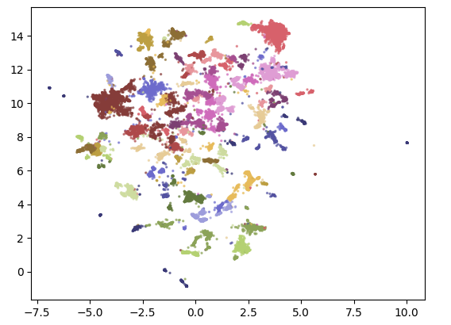

文档聚类#
文本聚类是一种无监督学习方法，旨在将大量文本数据根据内容相似性自动分组，形成若干类别或主题。主要过程包括：
预处理：文本进行分词、去停用词、词形还原等处理，以便提取有效信息。
特征提取：利用TF-IDF、词袋模型或深度学习方法（如词向量、句向量）将文本转化为数值向量表示。
聚类算法：常用的方法有K-means、层次聚类、密度聚类（如DBSCAN）等，根据向量间的相似度对文本进行分组。
评估与应用：通过轮廓系数等指标评估聚类效果，广泛应用于新闻分类、舆情分析、信息检索和主题挖掘等场景。
常见流程#
文本聚类有许多方法，从基于图的神经网络到基于质心的聚类技术，但一个普遍流行的流程包括以下三个步骤和相应算法：
1. 使用嵌入模型将输入文档转换为向量表示。
2. 使用降维模型降低这些向量的维度。
3. 利用聚类模型找出语义上相似的文档群体。
练习#
对ArXiv上”Computation and Language”领域的论文摘要进行聚类。
准备
在大模型时代，选择合适的模型非常重要，可以使用 MTEB leaderboard ，帮助我们决定用哪个模型。选择”Clusterring”任务，目前（2024年2月28日）得分最高的是
SFR-Embedding-2_R(7B)，54.62分。这里我们用阿里达摩院的 gte-small模型，得分41.08，参数量33M。安装所需类
!pip install datasets
从HF上加载数据所需数据
# Load data from Hugging Face from datasets import load_dataset dataset = load_dataset("maartengr/arxiv_nlp")["train"] # Extract metadata abstracts = dataset["Abstracts"] titles = dataset["Titles"]
将摘要转为embeddings
from sentence_transformers import SentenceTransformer # Create an embedding for each abstract embedding_model = SentenceTransformer("thenlper/gte-small") embeddings = embedding_model.encode(abstracts, show_progress_bar=True)
查看embedding的形状：
embeddings.shape
输出：
(44949, 384)
表示有44949个摘要，每个摘要被转换成了384维的向量表示
使用降维工具
from umap import UMAP # We reduce the input embeddings from 384 dimensions to 5 dimensions umap_model = UMAP( n_components=5, min_dist=0.0, metric='cosine', random_state=42 ) reduced_embeddings = umap_model.fit_transform(embeddings)
n_components参数来决定低维空间的形状，例如设置为 5 维。一般来说，将维度设置在 5 到 10 之间能够较好地捕捉高维数据的全局结构。min_dist参数表示嵌入点之间的最小距离，我们将其设置为 0random_state可以使结果在不同会话中可复现，但这会禁用并行计算，从而导致训练速度变慢。将降维后的Embedding进行聚类
from hdbscan import HDBSCAN # We fit the model and extract the clusters hdbscan_model = HDBSCAN( min_cluster_size=50, metric="euclidean", cluster_selection_method="eom" ).fit(reduced_embeddings) clusters = hdbscan_model.labels_ # How many clusters did we generate? len(set(clusters))
输出：
153查看聚类结果
import numpy as np # Print first three documents in cluster 0 cluster = 0 for index in np.where(clusters==cluster)[0][:3]: print(abstracts[index][:300] + "... \n")
输出：
This works aims to design a statistical machine translation from English text to American Sign Language (ASL). The system is based on Moses tool with some modifications and the results are synthesized through a 3D avatar for interpretation. First, we translate the input text to gloss, a written fo... Researches on signed languages still strongly dissociate lin- guistic issues related on phonological and phonetic aspects, and gesture studies for recognition and synthesis purposes. This paper focuses on the imbrication of motion and meaning for the analysis, synthesis and evaluation of sign lang... Modern computational linguistic software cannot produce important aspects of sign language translation. Using some researches we deduce that the majority of automatic sign language translation systems ignore many aspects when they generate animation; therefore the interpretation lost the truth inf...
可视化聚类结果
import pandas as pd from umap import UMAP # 将384维的嵌入向量降维到二维，以便更容易可视化 reduced_embeddings = UMAP( n_components=2, min_dist=0.0, metric="cosine", random_state=42 ).fit_transform(embeddings) # 创建DataFrame df = pd.DataFrame(reduced_embeddings, columns=["x", "y"]) df["title"] = titles df["cluster"] = [str(c) for c in clusters] # 选择非离群点和离群点（对应的聚类） to_plot = df.loc[df.cluster != "-1", :] outliers = df.loc[df.cluster == "-1", :]
import matplotlib.pyplot as plt plt.scatter( to_plot.x, to_plot.y, c=to_plot.cluster.astype(int), alpha=0.6, s=2, cmap="tab20b" ) plt.show()
输出结果：
